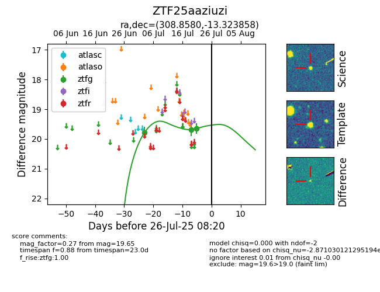

Target ZTF25aaziuzi at 2025-07-26 08:20, see:
FINK: fink-portal.org/ZTF25aaziuzi
Lasair: lasair-ztf.lsst.ac.uk/objects/ZTF25aaziuzi
ALeRCE: alerce.online/object/ZTF25aaziuzi
alt names
ZTF25aaziuzi (ztf,fink)
coordinates:
equatorial (ra, dec) = (308.8580,-13.32386)
galactic (l, b) = (32.2374,-28.99328)
photometry
last ztfg=19.65
3 ztfg detections
